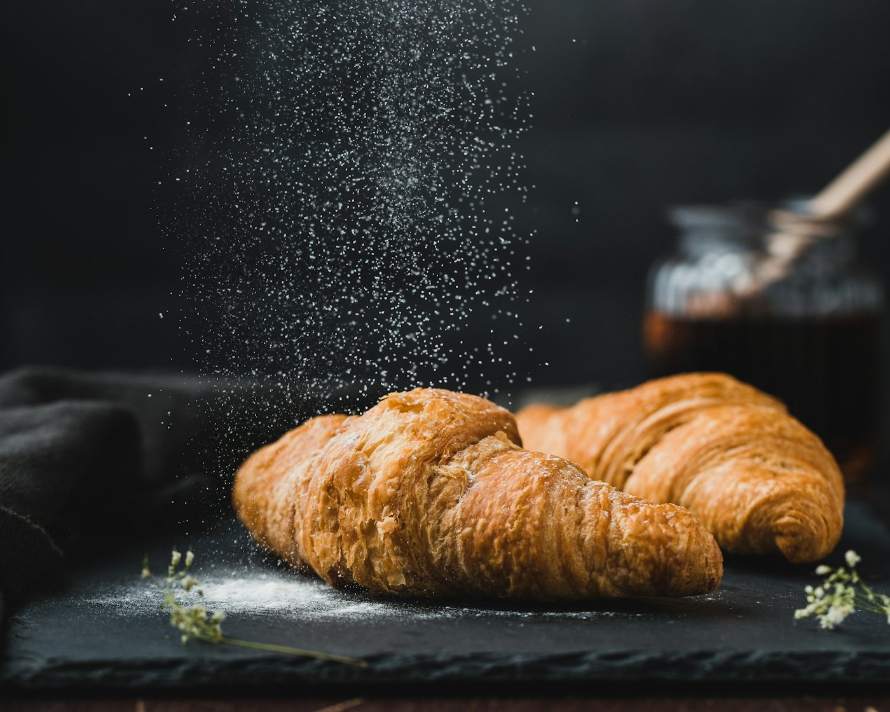

Restaurant in ZaltbommelLa Provence
Ambachtelijke Franse keuken van Luc van Iersel, in een monumentale villa uit 1860 aan de rand van de oude binnenstad.


Huiselijk, hartelijk en verzorgd
Bij de ingang van de historische stadswallen van Zaltbommel, tegenover het haventje, staat 'La Provence'. Sinds jaar en dag een begrip in de stad en de Bommelerwaard.
Het restaurant en de aangebouwde orangerie tellen samen zestien tafels. Luc staat zelf permanent achter het fornuis: soepen, sauzen, ijs en patisserie maakt de keuken allemaal zelf. In de zomer en bij mooi weer lunch en dineer je op het rookvrije terras.

Dineren, overnachten of samenkomen
Restaurant
Een vaste kaart en een dagelijks wisselend menu, op de seizoenen en wat de markt die dag brengt.
Keuken en wijnen
Chambres
Twee kamers op de eerste verdieping, met eigen badkamer en balkon. Het ontbijt wordt boven gebracht.
Bekijk de kamers
Zakelijk en privé
Vergaderen in de orangerie, een zakendiner of een besloten feest voor maximaal 55 gasten.
MogelijkhedenKerstdiner bij La Provence
Donderdag 24 en vrijdag 25 december
Drie signatuur-amuses en een diner van zes gangen. Daarbij een selectie wijnen per glas of per fles, of kies uit de volledige wijnkaart.
Menu de Noël
Drie amuses en zes gangen
- Bomboloni, zalm, Baeri kaviaar
Rivierpaling, augurk, sanbaizu
Rillette van eendenbout, dadel - Canadese kreeft, bulger, vadouvan
- Coquilles, pastinaak
- Tarbot, parmezaan, truffel
- Kalfswang, ganzenlever
- Hollands ree, kool, appel, wildjus met bosbes
- Amandel, krentjes, rum, appel, karamel
“De joviale chef is wars van namaak en blijft de ambachtelijke Franse keuken trouw.”Brabants Dagblad, rubriek ‘Over de tong’
Een villa met een verleden
Het pand heeft altijd een horecafunctie gehad. Tegenover de deur zat vroeger een stalhouderij: reizigers wisselden er hun paarden en bleven hier eten of slapen.
- 1860
De villa wordt gebouwd, eerst als Hotel Bellevue. De glas-in-loodramen boven deur en ramen zijn nog authentiek.
- 1977
Rien en Anne van Iersel beginnen hier 'La Provence'.
- 2001
In 2000 en 2001 wordt de villa volledig gerestaureerd, met behoud van alle authentieke details.
- 2003
Op 1 oktober neemt zoon Luc het restaurant over.
- 2022
Op de eerste verdieping openen de Chambres de 'La Provence'.
Lunch en diner
Lunch
| Dinsdag t/m vrijdag | 12:00 – 16:00 |
| Zaterdag | alleen diner |
| Zondag en maandag | gesloten |
Lunchmenu tot 13:45, daarna à la carte. Keuken sluit om 15:00.
Diner
| Dinsdag t/m zaterdag | 17:00 – 23:30 |
| Zondag en maandag | gesloten |
Dinermenu tot 19:30, daarna à la carte. Keuken sluit om 22:00.
5301 AR Zaltbommel
 Route plannen© OpenStreetMap-bijdragers
Route plannen© OpenStreetMap-bijdragersTegenover het haventje. Gratis parkeren op 4 minuten lopen (Beersteeg).
Een tafel reserveren
Bel bij voorkeur tussen 10:00 en 12:00 uur. Tijdens lunch en diner is de aandacht bij de gasten, dus mail gerust als je ons dan niet bereikt.